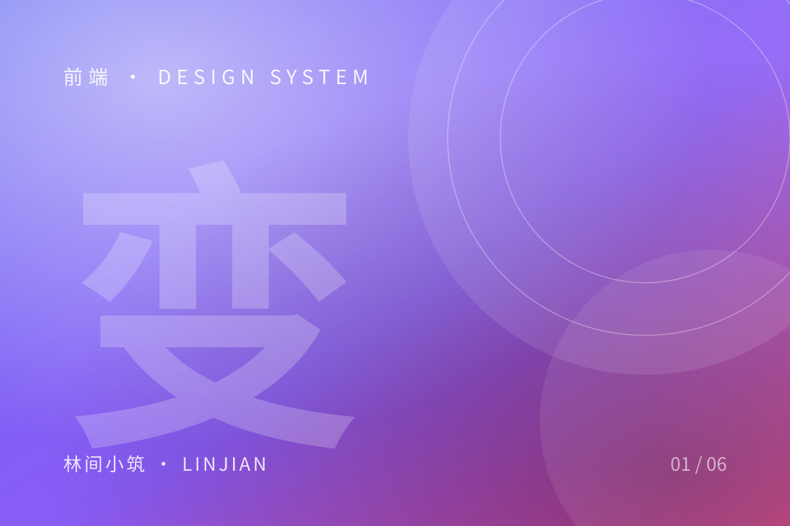
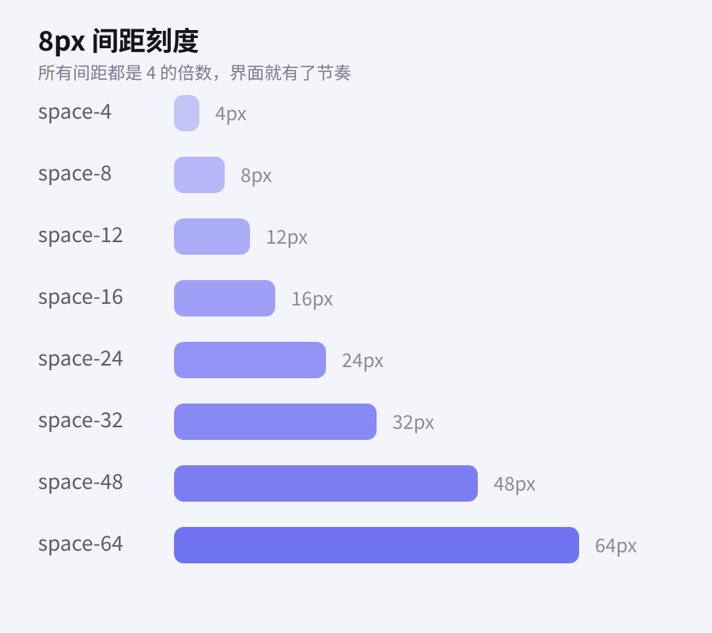

用 CSS 变量构建可维护的设计系统

设计系统最容易烂掉的地方，不是组件写得多复杂，而是同一个「主色」在十几个文件里以 #6366f1 的形式被复制了十几遍。等到品牌换色的那天，你会在仓库里做一次漫长而危险的查找替换。
从魔法值到语义变量
更好的做法是先定义一层语义变量，把「颜色」和「用途」绑定起来：
:root {
--color-bg: #f8f8fb;
--color-surface: #ffffff;
--color-text: #14141a;
--color-accent: #6366f1;
--radius-card: 20px;
}组件里只引用语义变量，不再关心具体色值。换肤、暗色模式、主题实验，都只需要改这一层。
间距要有刻度
比颜色更容易失控的是间距。10px、13px、18px 这样的数值一旦混进代码，页面就会开始「说不出的不整齐」。我给自己的约束是：所有间距都必须来自 4 的倍数。

设计系统不是一堆组件，而是一组被共同遵守的约束。
三个小习惯
- 变量命名用「用途 + 层级」，而不是「颜色 + 深浅」
- 暗色主题只覆盖语义层，不碰组件样式
- 每加一个变量，先问自己：它会被复用三次以上吗？
做到这三点，一套样式表可以撑很久。